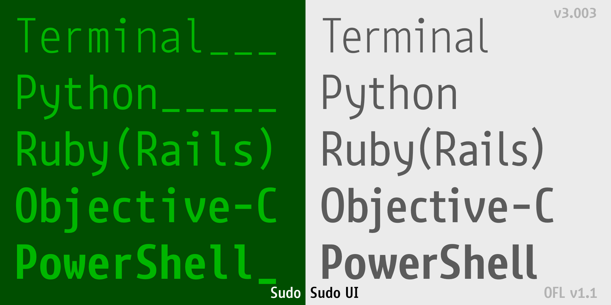
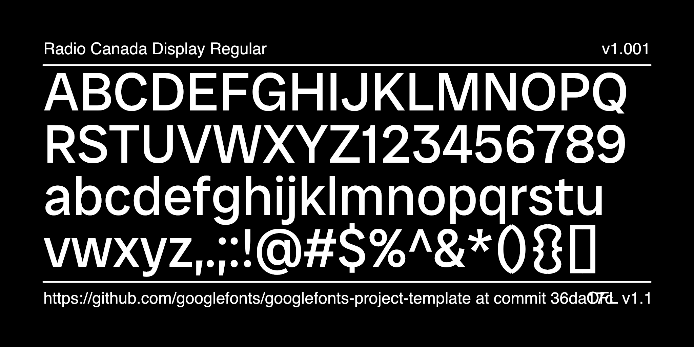

Sudo is a font designed for terminals, programming, and user interfaces. Use at 13 pixels size for optimal results. It has a monospaced variant, simply called Sudo, and a proportional variant, called Sudo UI. A Variable Font version is available. It has an extra variation axis to modify the length of descenders.
Sudo decidedly has no ligatures, but supports all common Powerline glyphs out of the box.
Find out more about the fonts at kutilek.de/sudo-font/.
To contribute, see github.com/jenskutilek/sudo-font.git.

